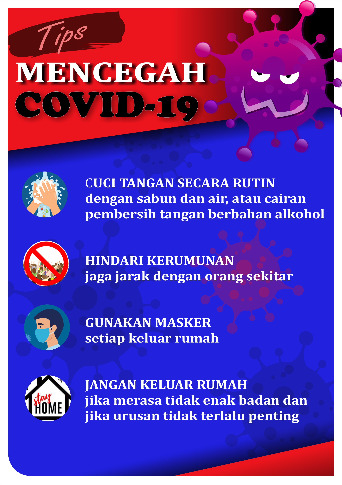

TIPS MENCEGAH COVID-19
Coronavirus telah menyerang ribuan orang di berbagai negara dan menelan ratusan korban jiwa. Agar tidak terkena penyakit infeksi yang sedang mewabah ini, ada beberapa cara yang bisa dilakukan untuk mencegah penularan virus Corona Penyebab dari wabah ini adalah coronavirus jenis baru yang disebut dengan novel coronavirus 2019 (2019-nCoV).
Penyakit ini termasuk dalam golongan virus yang sama dengan virus penyebab severe acute respiratory syndrome (SARS) dan Middle-East respiratory syndrome (MERS).
Beberapa tips untuk mecegah COVID-19 tidak menyerang kita adalah dengan rajin mencuci tangan, menghindari kerumunan, menggunakan masker, dan tetap di rumah saja apabila tidak ada alasan penting untuk keluar.
1. Cuci Tangan Secara Rutin
Mencuci tangan dengan benar adalah cara paling sederhana namun efektif untuk mencegah penyebaran virus 2019-nCoV. Cucilah tangan dengan air mengalir dan sabun, setidaknya selama 20 detik. Jika Anda berada di tempat yang sulit untuk menemukan air dan sabun. Anda bisa membersihkan tangan dengan hand sanitizer. Gunakan produk hand sanitizer dengan kandungan alkohol minimal 60% agar lebih efektif membasmi kuman.
2. Hindari Kerumunan
Menjaga jarak minimal 1 meter dengan orang lain, terutama saat beraktivitas di tempat umum atau keramaian. Anda juga perlu menghindari kontak dengan orang yang sedang sakit, diduga terinfeksi virus Corona, atau sudah dinyatakan positif COVID-19.
3. Gunakan Masker
Masker masih menjadi salah satu alat pelindung diri yang penting digunakan untuk mencegah penyebaran virus Corona COVID-19. Meski sebelumnya hanya disarankan untuk orang yang sakit saja, tapi kini semua masyarakat juga dihimbau untuk menggunakannya ketika keluar rumah.
4. Jangan Keluar Rumah
Pembatasan fisik atau physical distancing adalah salah satu langkah penting untuk memutus mata rantai penyebaran virus Corona. Hal ini dapat dilakukan dengan cara tidak bepergian keluar rumah, kecuali untuk keperluan yang mendesak atau darurat, seperti berbelanja bahan makanan atau berobat ketika sakit.